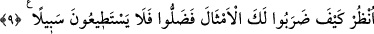
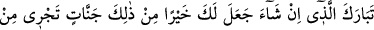
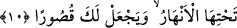
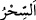
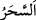

safhasına varmışlardır.
Ehl-i hakâikten birisi: “Onlar kendi kötü hallerini nübüvvet aynasında görüyorlar ve
onun Nebî (a.s.)’ın hâli olduğunu zannediyorlardı.” der.
“ (sihir)” gecenin sonu ile şafak arasındaki vakti ifâde eden “ (seher)”
kelimesinden türemiştir. Çünkü seher vaktinde karanlık ve aydınlık biri diğerinden
tamamen ayrılmadan birbirine karışır. Sihrin bir hakka bakan yönü bir de bâtıla bakan
yönü vardır. Çünkü kendisine sihir yapılan kişi yapmadığı bir şeyi yaptığını hayâl eder.
9. (Rasûlüm!) Senin hakkında bak ne biçim temsiller getirdiler! Artık onlar
sapmışlardır ve (hidâyete) hiçbir yol da bulamazlar.
“(Rasûlüm!) Senin hakkında bak ne biçim temsiller getirdiler!” Yâni senin hakkında
nasıl da akıl dışı, garabetinden dolayı temsil yerine geçecek şu tuhaf sözleri söylediler.
Senin hakkında gerçekleşmesi imkânsız şu şaz halleri uydurdular. Bu onların senin
durumunu bilmemelerinden ve cemâlinden gaflette olmalarındandır.
Bazıları âyeti şöyle tefsir etmiştir: “Seni büyülenmiş, peygamber gönderilmeye
elverişli olmayan fakir ve işlerini yapmaktan yoksun bir kimseye benzettiler. Çünkü
seninle birlikte bir meleğin de bulunmasını istediler.”
“Artık onlar sapmışlardır” apaçık bir şekilde haktan sapıp uzaklaştılar “ve”
hidâyete, dalâletlerinden kendilerini çıkarıp kurtaracak “hiçbir yol da bulamazlar.”
Büyüklerden birisi şöyle demiştir: “Onlar nübüvvete itiraz ve inkârda bulunarak hakkı
bulma istîdâdlarını kaybettikleri için Allah Teâlâ’ya vuslattan mahrûm oldular.”
10. Dilerse sana bunlardan daha iyisini, altlarından ırmaklar akan cennetleri
verecek ve sana saraylar ihsan edecek olan Allah’ın şânı yücedir.
“Dilerse” dünyada “sana bunlardan” onların söylediği sana hazine ve bahçe
verilmesinden “daha iyisini,” verir. Fakat o bunu âhirette vermeyi murâd etmiş ve
âhirete tehir etmiştir. Çünkü “âhiret daha hayırlı ve daha devamlıdır.” (el-A‘lâ,
87/17)
“altlarından ırmaklar akan cennetleri verecek” onların söyledikleri şeylerden
bunların daha hayırlı olduğu ise kesindir. Çünkü bunlarda bir sayı sınırlaması yoktur,
ayrıca akan ırmaklardan da bahsedilmiştir. “ve sana saraylar” dünyada da cennet